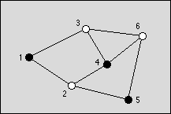
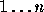
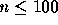
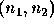
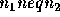

| Graph Coloring |
You are to write a program that tries to find an optimal coloring for a given graph. Colors are applied to the nodes of the graph and the only available colors are black and white. The coloring of the graph is called optimal if a maximum of nodes is black. The coloring is restricted by the rule that no two connected nodes may be black.

Figure: An optimal graph with three black nodes
The graph is given as a set of nodes denoted by numbers  ,  , and a set of undirected edges denoted by pairs of node numbers  ,  . The input file contains m graphs. The number m is given on the first line. The first line of each graph contains n and k, the number of nodes and the number of edges, respectively. The following k lines contain the edges given by a pair of node numbers, which are separated by a space.
The output should consists of 2m lines, two lines for each graph found in the input file. The first line of should contain the maximum number of nodes that can be colored black in the graph. The second line should contain one possible optimal coloring. It is given by the list of black nodes, separated by a blank.
1 6 8 1 2 1 3 2 4 2 5 3 4 3 6 4 6 5 6
3 1 4 5